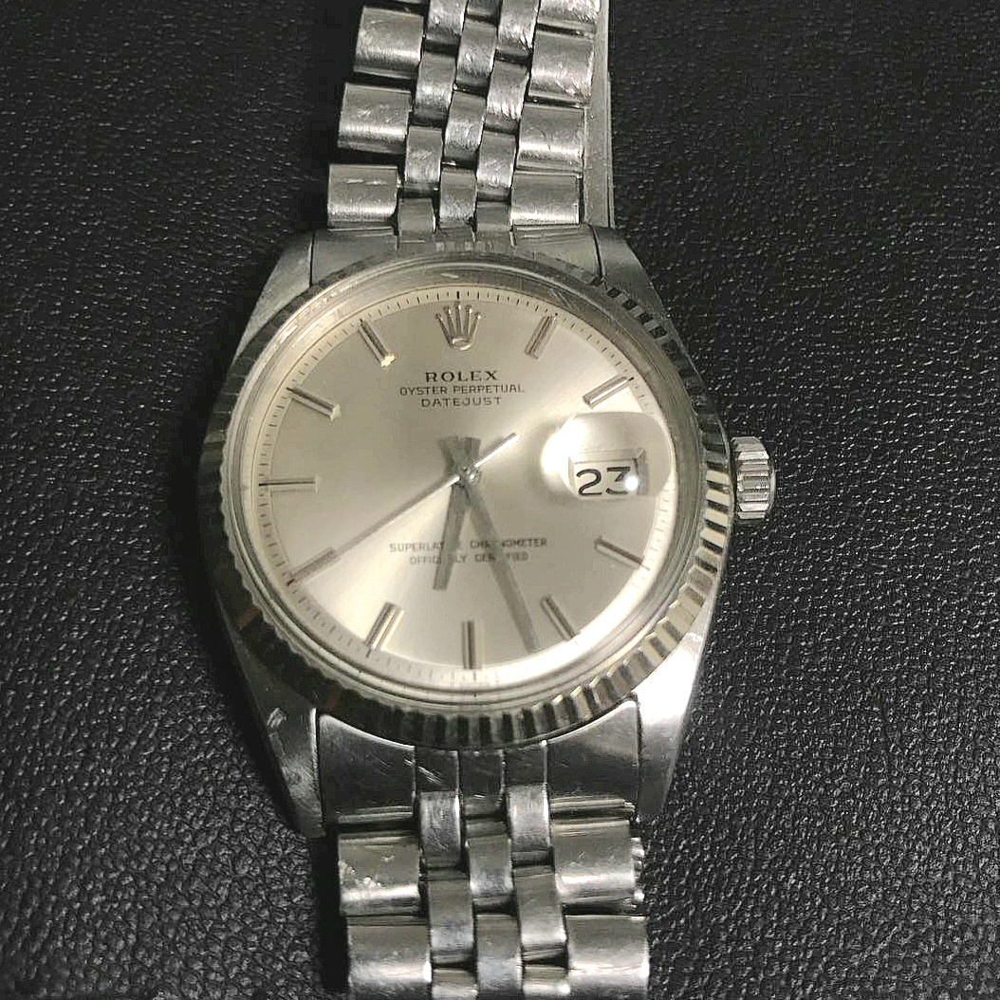
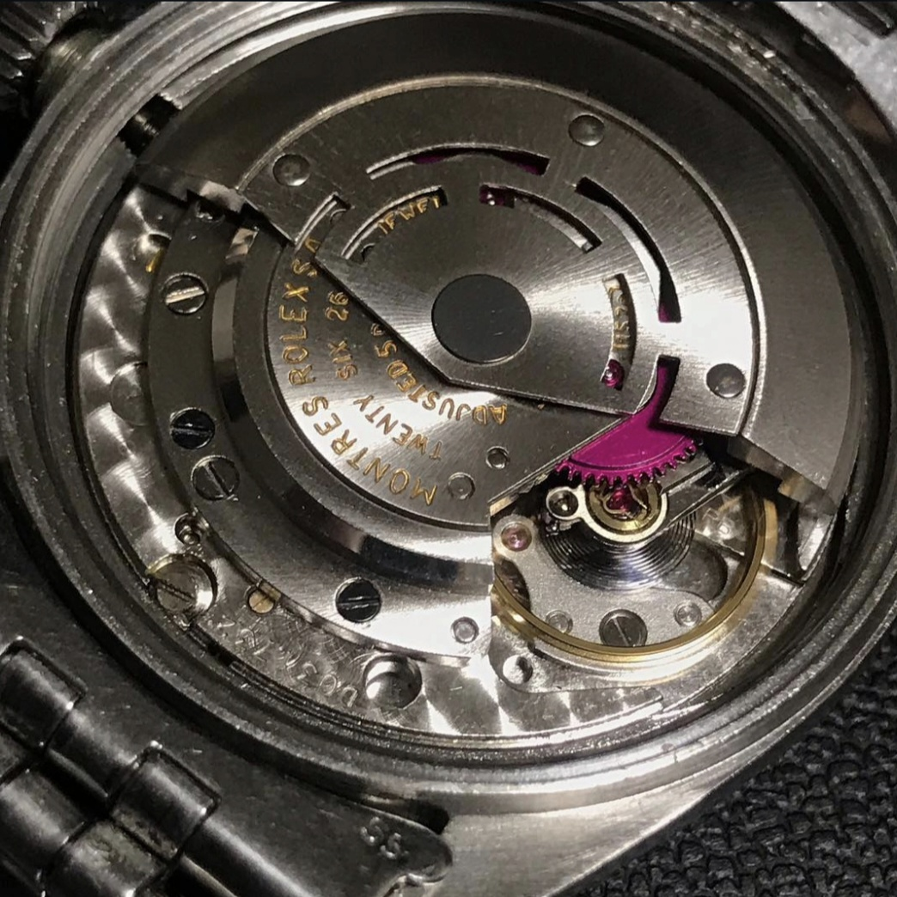
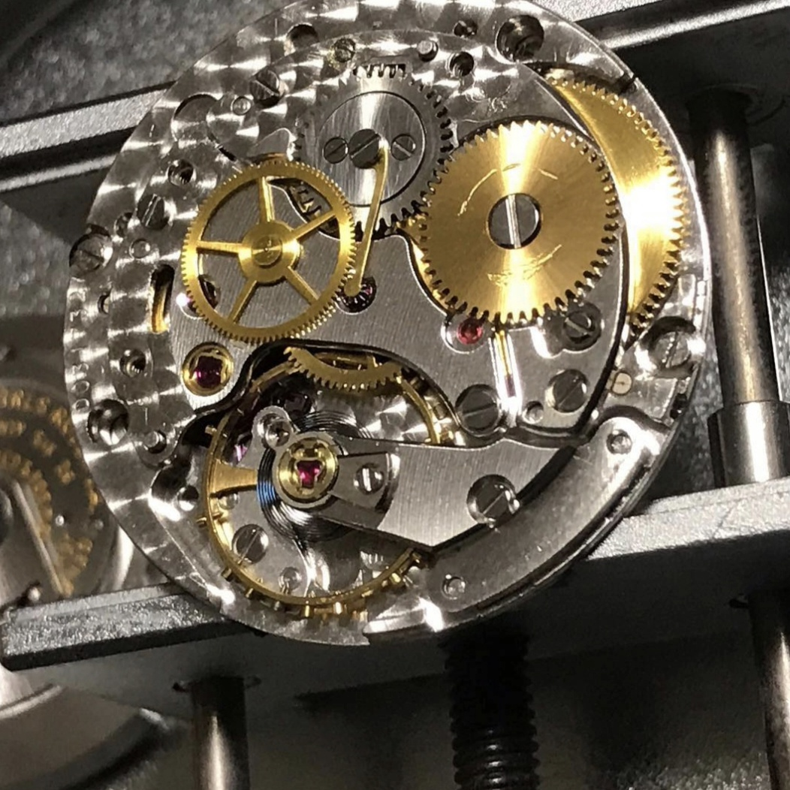

Case Study. 05 (2026.05)
実用時計の最高峰。ロレックス デイトジャスト(Ref.1601)の分解掃除

今回お預かりしたのは、世界中で最も知られ、愛され続けている実用高級時計の金字塔、ROLEX（ロレックス）の「デイトジャスト Ref.1601」です。
フルーテッドベゼルにジュビリーブレスレットという、ロレックスの王道スタイルを確立した名作。長年の使用による小傷は、この時計がオーナー様と共に歩んできた豊かな時間を物語っています。

堅牢なオイスターケースを開封すると、赤紫色の美しいリバーシングギア（切替車）が特徴的な自動巻きムーブメントが姿を現します。ロレックスが長年かけて熟成させてきたこのムーブメントは、当時の技術基準から見ても極めて優秀であり、現代の実用にも十分に耐えうる驚異的な設計がなされています。

自動巻き機構を取り外し、輪列構造を確認していきます。ロレックスのムーブメントが「実用時計の最高峰」と呼ばれる所以は、装飾の華美さではなく、トルクの伝達効率、各パーツの厚みと剛性、そしてメンテナンス性を極限まで追求したこの「機能美」にあります。
古い油や微細な金属粉を完全に洗浄し、適切な箇所に最適な油を注油しながら慎重に組み上げていきます。テンプの振り角もしっかりと回復し、クロノメーター規格をクリアする素晴らしい精度を取り戻しました。次の世代へと受け継がれていくべき、名機中の名機です。